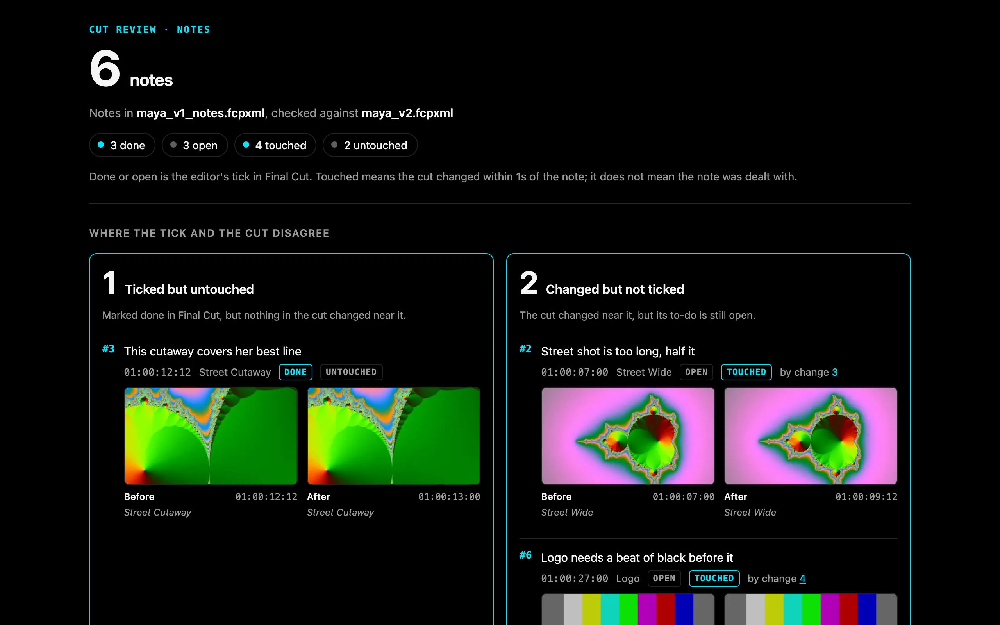
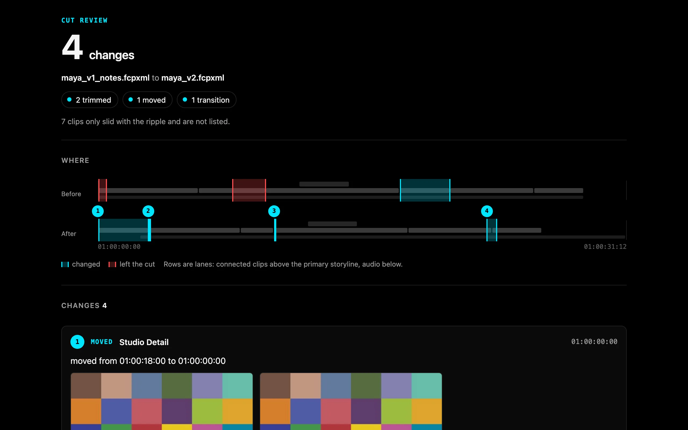

Frame.io comments and client notes as Final Cut Pro to-do markers
Cut Review is a free, open source command line tool and MCP server for Final Cut Pro. It writes client notes and Frame.io comment exports into your project's FCPXML as to-do markers on the clips they are about. After the recut it compares two FCPXML exports and shows, on one page, what changed and which notes the recut touched, whether you or an AI agent made the edit.
uvx cutreview notes cut.fcpxmld notes.txtQuick startSource on GitHubcutreview on PyPIUse it from Claude

It starts where your tick and the cut disagree
Each note comes back done or open, which is your tick in Final Cut, and touched or untouched, which is whether the cut changed within a second of it. The page leads with the two lists that need a second look.
Ticked but untouched
Marked done in Final Cut, but nothing in the cut changed near it. The note may have needed no change, the fix may sit further away, or the tick came early.
Changed but not ticked
The cut changed near it, but its to-do is still open. The change may have dealt with it and the tick was missed, or it was a change for something else.
Cut Review says touched, never addressed. Whether a change is what the reviewer asked for stays your call.
Quick start
You need uv (brew install uv) and an XML export of your project from Final Cut Pro (File > Export XML).
Write your notes, one per line, timecode first
00:00:05:00 Too long on B, cut it down 00:00:13:00 Drone could breathe, slow it downPut them on the cut as to-do markers
uvx cutreview notes cut.fcpxmld notes.txtThis writes
cut_notes.fcpxmldand prints where each note landed. In Final Cut, File > Import > XML, then open the Timeline Index (Shift-Command-2) to see the to-dos.Recut, tick what you dealt with, export again
Each to-do sits on its clip in that clip's own source time, so it moves with the clip when you trim or reorder.
See which notes the recut touched, and what changed
uvx cutreview status cut_notes.fcpxmld cut_v2.fcpxmld -o status.html uvx cutreview diff cut_notes.fcpxmld cut_v2.fcpxmld -o review.html
Four commands, one page each
Notes are read by fixed rules you can read in the source. A note with no timecode is listed as not placed, never given a time, and a line that cannot be read is listed with the reason.
cutreview notes
Plain text with timecodes, any CSV, or a Frame.io comment CSV, written into the cut as to-do markers on the clip under each note. Every write is checked against Apple's FCPXML DTD and read back before it is kept.
cutreview status
Reads the next export and reports each note as done or open, touched or untouched. A note whose clip is gone reads removed with its clip.
cutreview diff
Any two exports, notes or not: every clip added, removed, trimmed, moved, retimed or adjusted, with a timeline strip and before and after frames. A clip that only slid with a ripple is counted, not listed.
cutreview blame
The same page with each change named by the fcp-mcp-server tool call that made it. Work done by hand reads not in the journal.

What it is not
- Not a review platform. There is no server, no account and no upload. Every page is one HTML file on your disk.
- Not a judge of the edit. It says touched, never addressed.
- No AI in the notes path. Notes are placed by rules, and a note it cannot place is listed, never guessed.
- Not an editor. It writes markers and nothing else. It never changes a clip, and it never opens or drives Final Cut.
Questions
How do I get Frame.io comments into Final Cut Pro?
Export the comments from Frame.io as a CSV (in Frame.io V4: the three-dot menu in the Comments tab), then run uvx cutreview notes cut.fcpxmld comments.csv and import the result in Final Cut with File > Import > XML. Cut Review finds a Frame.io export by its Commenter and Comment columns, writes each comment as a to-do marker on the clip under it, folds replies into the comment they answer, and writes comments already marked complete as completed markers.
Does it work with Frame.io V4?
Frame.io documents V4's comment export as CSV or plain text but publishes no column list. Cut Review reads the columns by name, never by position, and has been tested on a file rebuilt from the published V3-era names, not yet on a real V4 export. If your export does not read, open an issue with its header row.
How do I import a CSV of notes as Final Cut Pro markers?
Any CSV with a header row works. Cut Review finds the time column by name (timecode, time, tc, in, start) and the note column likewise (note, comment, text, feedback), with an author column if there is one. uvx cutreview notes cut.fcpxmld notes.csv writes them as to-do markers. A row with no time is listed as not placed, never guessed.
How do I compare two FCPXML files and see what changed between two Final Cut exports?
uvx cutreview diff cut_v1.fcpxmld cut_v2.fcpxmld -o review.html writes one HTML page listing every clip added, removed, trimmed, moved, retimed or adjusted, and every transition change, with a timeline strip and before and after frames. Clips are matched by source material, not by name, so a ripple, a head trim or a cut built on connected clips reads correctly.
How do I check what an AI agent changed in my edit?
Run cutreview diff on the export before and after the agent worked. If the agent edited through fcp-mcp-server, cutreview blame names the tool call behind each change from that server's write journal, and marks anything done by hand as not in the journal. If your notes were on the cut, cutreview status shows which of them the agent's changes touched.
How do I track which client notes the recut dealt with?
Put the notes on the cut as to-do markers with cutreview notes, tick them in Final Cut as you work, then run cutreview status on the next export. Each note comes back done or open (your tick) and touched or untouched (whether the cut changed within a second of it), and the page starts with the notes where those two disagree.
Is Cut Review a Frame.io alternative?
No. It does not host video or collect comments from clients. It works on the notes you already get, from Frame.io, email, texts or a call, and on Final Cut's own XML exports.
Is there an MCP server for Final Cut Pro?
Yes: fcp-mcp-server lets Claude and other MCP clients read and edit Final Cut Pro timelines through FCPXML. Cut Review is the review step beside it, as one MCP tool, review, with the actions diff, blame, notes and status.
How it compares
Use Change List X when you need a conform change list for sound or VFX, in feet and frames, with pull and discard lists. Use Marker Toolbox when your notes come from Vimeo, Wipster, Dropbox Replay or Frame.io's FIOJSON download, or when you want drawn annotations brought across. Cut Review is for the step after the notes are on the cut: knowing which ones the recut actually changed.
| Feature | Cut Review | Change List X | Marker Toolbox | Frame.io V4 |
|---|---|---|---|---|
| What it is | Free, open source command line tool and MCP server (MIT) | Mac app, US$199.99 | Final Cut workflow extension, US$19.99 | Hosted review platform, free and paid plans |
| Notes into Final Cut as markers | Yes: plain text, any CSV, Frame.io comment CSV, as to-do markers on the clip | No | Yes: Frame.io FIOJSON (including the V4 beta), Vimeo, Wipster, Dropbox Replay, Premiere CSV, Timecode+, email text; resolved comments arrive completed | Comment export as CSV or text; its V3 Import Comments into FCP article now redirects to the help center home |
| Compares two versions of the cut | Any two FCPXML exports, every lane, matched by source material | Primary storylines of two projects, as a PDF or TSV change list with pull and discard lists | No | Plays two uploaded versions side by side or overlaid: the pictures, not the timeline's clips |
| Which notes the recut touched | Yes: done or open, against touched or untouched | No | No | No |
| Which agent tool call made each change | Yes, from fcp-mcp-server's journal | No | No | No |
Read from each product's own page on 2026-11-12: Change List X, Marker Toolbox, Frame.io comment export, Frame.io Comparison Viewer. Prices are the US Mac App Store's.
Use it from Claude
Cut Review is also an MCP server with one tool, review, and the actions diff, blame, notes and status. Every file it writes stays inside the folder of the cut it was given. Its name in the official MCP registry is io.github.DareDev256/cutreview.
claude mcp add cutreview -- uvx cutreview mcpFor Claude Desktop and other clients that take a JSON config:
{"mcpServers": {"cutreview": {"command": "uvx", "args": ["cutreview", "mcp"]}}}It pairs with fcp-mcp-server, which lets Claude read and edit Final Cut Pro timelines.